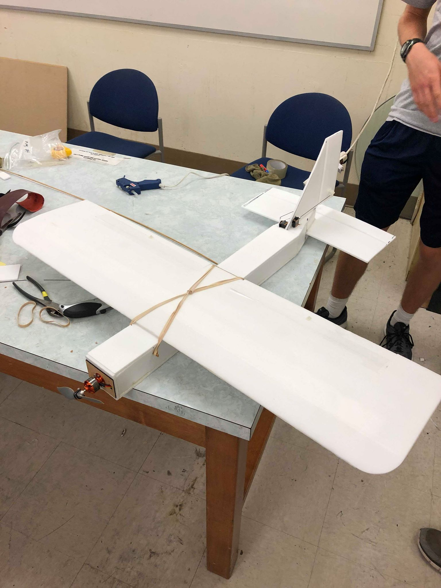

|
This RC plane was the second of two group projects for Design and Fabrication (ME14). Given the choice to decide what our
final project was, we decided to build an RC plane, with the stretch goal of adding a sensor suite enabling semi-autonomous
flight. While we ultimately didn't have the time to implementing GPS and yaw control, I did implement computer-controlled
pitch and roll control using an IMU and an arduino (the plane was able to maintain level flight for several seconds before landing).
The video below shows the plane autonomously responding to its current pitch/roll at around 2:06. |
 The plane, before post-crash repairs |